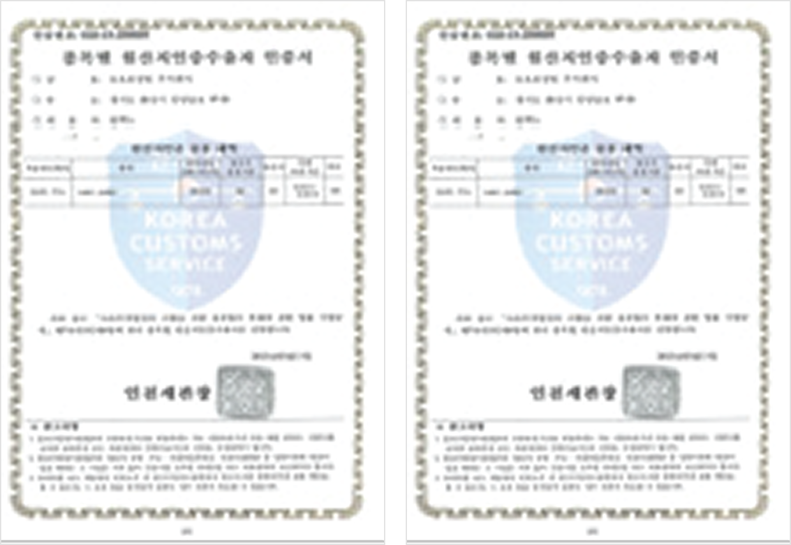

품질경영시스템
IATF 16949 / ISO 9001
-
뉴오토정밀의 품질활동은 지속적인 개선과 경향 예방 및 산포와 낭비 감소를 위한 품질경영시스템을 갖추어 기업의 경쟁력을 제고하고 고객만족을 위하여 최선을 다하고 있습니다.
-
뉴오토정밀은 고객만족을 위하여 우수하고 안전한 품질의 제품과 서비스를 제공하고 있으며, 품질경영시스템을 최고경영자의 리더십 아래 품질을 최우선으로 관리하고 있습니다.
-
고객만족을 위하여 청정 환경에 적합한 품질목표를 설정하고, 이를 달성하기 위한 품질경영시스템을 수립하며 모든 임직원은 품질목표를 달성하기 위하여 끊임없이 노력하고 있습니다.

품질경영
품질을 최우선으로 관리하여 최고 품질의 제품을 고객에게 공급
선제적 대응을 통한 예방 품질확보
품질 경쟁력 우수기업을 통한 품질인증 획득
고객만족의 품질혁신
모든 구성원의 적극적인 참여와 프로세스 접근방법을 이해하고 실행하여 지속적으로 발전
고객 불량 유출 방지
예방 품질 활동과 사전점검 활동
불만 사항 지속적 개선